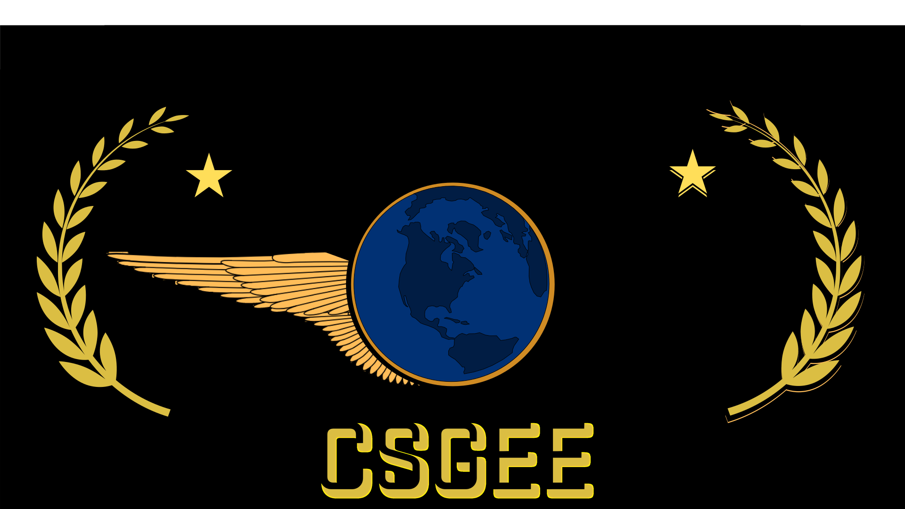

Os eSports do Counter-Strike começaram a ganhar destaque no final dos anos 1990 e início dos anos 2000, à medida que o jogo atraiu uma comunidade competitiva de jogadores devido ao seu foco em equipes e táticas estratégicas. Inicialmente, os torneios de eSports do Counter-Strike eram organizados por comunidades de jogadores e pequenas empresas de eventos.
No entanto, um marco importante para o cenário competitivo do Counter-Strike foi a formação da Cyberathlete Professional League (CPL) em 1997. A CPL foi uma das primeiras organizações a promover e sediar competições de eSports em grande escala, incluindo torneios de Counter-Strike ao redor do mundo. Esses eventos ofereciam prêmios em dinheiro e ajudaram a dar visibilidade ao cenário competitivo do jogo.
Outra organização importante que contribuiu para o crescimento dos eSports do Counter-Strike foi a Electronic Sports World Cup (ESWC), fundada em 2003. A ESWC se tornou conhecida por sediar campeonatos mundiais de eSports, incluindo torneios de Counter-Strike, e desempenhou um papel fundamental no aumento da popularidade e do reconhecimento dos jogadores profissionais.
À medida que o interesse nos eSports do Counter-Strike crescia, mais organizações e patrocinadores começaram a investir no cenário competitivo, resultando no surgimento de grandes torneios e ligas, como a Intel Extreme Masters (IEM), DreamHack e ESL Pro League. Esses eventos proporcionaram oportunidades para jogadores profissionais competirem em alto nível e ganharem reconhecimento global.
Em relação aos Majors de Counter-Strike, eles são os torneios mais prestigiosos e importantes do cenário competitivo do CS:GO (Counter-Strike: Global Offensive). Organizados pela Valve Corporation, desenvolvedora do jogo, os Majors ocorrem duas vezes por ano.
Os Majors de CS:GO tiveram início em 2013, com o nome de "CS:GO Championship Series". O primeiro Major foi o DreamHack Winter 2013, sediado em Jönköping, na Suécia. Naquela época, o torneio contou com 16 equipes competindo pelo título e um prêmio total de $250.000.
A partir de 2014, a Valve assumiu a organização dos Majors de CS:GO e introduziu uma série de mudanças significativas. O formato dos torneios foi alterado para incluir qualificatórias regionais, aumentando o número de equipes participantes. Além disso, a Valve começou a contribuir financeiramente com o prêmio total do torneio, inicialmente estabelecendo-o em $250.000, mas aumentando-o gradualmente ao longo dos anos.
Um marco importante para os Majors de CS:GO foi alcançado em 2016, quando a Valve aumentou o prêmio total para $1 milhão no MLG Columbus Major, tornando-o o primeiro torneio de CS:GO a atingir essa marca em premiação.
Os Majors de CS:GO continuam a crescer em popularidade e importância, tornando-se eventos icônicos para os jogadores, equipes e fãs do jogo. Com produções de alto nível, transmissões ao vivo com comentaristas profissionais, análise de especialistas e uma base de fãs entusiasmada, esses torneios atraem uma grande audiência global e se estabeleceram como marcos importantes no calendário competitivo do CS:GO.
A cada ano, novos Majors são realizados em diferentes locais ao redor do mundo, proporcionando uma experiência emocionante tanto para os jogadores quanto para os fãs do jogo. Os Majors de CS:GO representam o ápice da competição, celebrando a habilidade, a estratégia e o talento dos melhores jogadores do mundo no Counter-Strike.